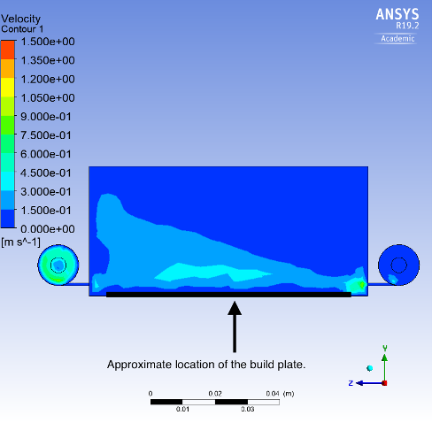

Hello, my name is Alex, and welcome to my professional portfolio. As a dedicated software engineer, I have been spearheading the development of a cutting-edge metal 3D printer's software since 2020. I am proud to hold a Bachelor of Applied Science in Physics with a specialization in computing from Queen's University, Class of 2020. My passion for software engineering, aerospace engineering, and robotics drives me to excel in collaborative environments where I can make a meaningful impact.
Throughout my career, I have devoted myself wholeheartedly to both professional and personal projects, deriving immense satisfaction from seeing my ideas come to life and observing end-users enjoying the fruits of my labor. My commitment to delivering exceptional results is matched only by my enthusiasm for the work I do.
My journey into programming began during my engineering design team days at school, and ever since then, I have been captivated by the endless possibilities it offers. With a strong foundation in C# and C++, I have immersed myself in various software engineering specializations, including robotics, web development, game engine design, and machine learning. This diverse range of experiences has fueled my passion for tackling innovative projects and honing my skills as I advance in my professional career.
As you explore my portfolio, you will find a showcase of some of the projects that have shaped my journey thus far. I am excited to share my story and eager to embark on new challenges and opportunities that lie ahead. Let's create extraordinary solutions together!
Projects
The following is a list of projects I've developed with details regarding what went into them. Most projects were done independently and anything not made entirely by me will be marked as such.
As the lead developer of software that transforms aerospace welding machines into 3D printers, I have gained extensive experience in designing, developing, and deploying complex user-facing software. The software I developed for metal additive 3D printing comprises a graphical CAD-style editor and various toolpath generation tools for welding and 3D printing of metal components. These tools enable users to create parts from scratch, repair parts, or add features to existing parts during production.
Graphical Editor
I custom-built the CAD-style editor using OpenGL to ensure fast rendering of models with millions of triangles and point clouds with millions of points.
For debugging purposes, I implemented a runtime recompiler for shader programs that automatically updates the shader source code loaded on the GPU whenever a developer modifies the shader source on the hard drive.
Slicer
I designed a custom 3D printing slicer, specifically tailored to the particular welding process that my employer specializes in. This slicer can also generate 5-axis toolpaths, allowing for the printing of complex geometries and overhangs without support material.
Below are some examples of parts that were welded using the slicer I wrote.
Dynamic Welding Repair
To repair service-run aerospace components, I developed sophisticated proprietary software tools that generate dynamic 5-axis toolpaths, responding to the variable wear conditions of the given parts. Below a picture of this tool and the resulting weld is shown.
I began creating the aforementioned tools in the fall of 2020, and they have directly resulted in over $1M in sales to date. These tools operate in both industrial production environments and R&D facilities. My employer now utilizes these tools as the foundation of their offerings in the rapidly expanding additive manufacturing industry.
Robotic Arm Control
During my undergraduate studies, I had the privilege of serving as the Chief Technology Officer (CTO) for the Queen's Space Engineering Team (QSET). In this role, I contributed to the development of a robotic arm control system for a mock Mars rover. QSET participated in the University Rover Challenge, where various undergraduate design teams competed with their rover designs to complete tasks such as equipment servicing, astronaut assistance, and autonomous traversal. These tasks demanded precise teleoperated control of the rover and its manipulator. This project focuses on the control algorithms I wrote for the rover's manipulator, which are written in C++ and implemented using the Robot Operating System (ROS). The image below showcases the robotic arm for which these algorithms were developed.
The arm control system comprises three distinct programs: joint control, angle control, and position control.
Joint Control
Joint control allows the user to select a single joint motor and apply a voltage proportional to their joystick input. This system serves as a fallback in case of encoder failure, as it does not rely on encoders for operation. However, joint control is not an ideal primary control scheme due to its tedious and unintuitive nature, as nearly all motion occurs in arcs. The video below demonstrates joint control, showing how only one joint motor is driven at a time.
Angle Control
Angle control utilizes a set of PID controllers to set a single joint to a desired angle. This system requires position encoders to determine the current angle of a given joint, allowing for an error term to be fed back into the PID controller. Angle control is a precursor to the more advanced position control.
Position Control
Position control employs inverse kinematics to enable the arm's end-effector to track in the x-y plane, rather than in arcs. This is accomplished by calculating the end-effector's position in the x-y plane and applying an offset proportional to the user's joystick input. The resulting offset coordinate serves as the desired position of the end-effector, and inverse kinematic trigonometry calculates the required angles for each arm joint to achieve the desired x-y coordinate. These angles are then fed into the angle control system, which drives the motors. The video below illustrates position control in action, highlighting how the robotic arm's "shoulder" and "elbow" work together to facilitate linear motion of the end-effector.
Robotic Driving Control
During my time as the Chief Technology Officer (CTO) of the Queen's Space Engineering Team (QSET), I developed a drive control system for our mock Mars rover. For further details about QSET and the rover's robotic arm control, please refer to the Robotic Arm Control project. This particular project was written in C++ using the Robot Operating System (ROS).
The control system for this project was designed with two separate control schemes: voltage control and velocity control.
Voltage Control
Voltage control is a simple fallback system that applies a voltage proportional to the user's joystick input. To facilitate turning, the two sides of the rover receive differing voltages, allowing it to 'skid-steer'. This system is employed as a fallback because it does not require any encoders to operate. However, it is not the preferred drive system due to the low holding torque of the inactive motors when no voltage is applied, which can cause the rover to roll on hills.
Velocity Control
To address the limitations of the voltage control system, a PID controller is utilized. In this scheme, the user's joystick position determines the velocity set point, while velocity encoders on all wheels provide error terms for the PID controller. When the joystick is at rest, this system holds the wheels still, preventing the rover from rolling on hills. The video below demonstrates the PID-controlled velocity control system in action.
Solar System Formation Simulator
The Solar System Formation Simulator is a project I developed to deepen my understanding of JavaScript and explore the emergence of solar system structures through the application of gravitational laws.
This simulator employs the leapfrog integration method to solve the differential equations governing the motion of celestial bodies. Leapfrog integration updates the position, velocity, and acceleration of a body in a 'kick and drift' manner using staggered steps, making it stable for oscillating systems. For a more comprehensive introduction to this algorithm, refer to the Wikipedia article at en.wikipedia.org/wiki/Leapfrog_integration.
When adding celestial bodies to the simulation, users can apply velocity by clicking and holding the mouse, then pulling back like a slingshot. The simulator then computes the predicted path of the body by briefly stepping forward in the simulation. The following video demonstrates this functionality.
In terms of collision handling, the simulator approximates celestial body collisions using a simplified model that enforces the conservation of linear momentum through completely inelastic collisions. When two bodies collide, their masses combine to form a single body, and the resulting body's radius is adjusted based on a predetermined constant density for all bodies within the simulator. To ensure momentum conservation, the velocity of the resulting body is also adjusted accordingly. The subsequent video showcases this behavior.
The simulator also features several pre-set options to observe the emergence of solar system structures. These include random asteroid belts and asteroid scatterings, as demonstrated in the next two videos.
Gas Flow System Redesign
While my primary focus lies in software engineering, I also undertook a mechanical engineering project during my undergraduate studies, exploring fluid dynamics for my thesis. This project aimed to redesign the gas flow system in a metal additive (MA) selective laser melting (SLM) 3D printer, and I believe it is interesting enough to discuss here, despite not being software-related.
SLM 3D printers require efficient gas flow systems to remove fumes and ejected particles from the point where the metal is being melted by the printer's laser. It is crucial to ensure that ejected metal particles are swept out of the build chamber and not allowed to redeposit on the build surface. Consequently, laminar flow is highly desirable, as turbulent flow may pick up additional metal particles from the build surface and fail to consistently transport entrained particles to the outlet.
The initial ANSYS simulation (see the screenshot below) revealed non-uniform and turbulent flow within the build chamber, with the gas inlet on the right and the outlet on the left.

After several design iterations, an improved chamber design was developed, which mimicked the behavior of a fume hood. Baffles were added to force the gas to cycle through the chamber, exerting downward pressure on the gas entering from the inlet nozzle on the right, as seen in the image below.
This design allows metal particles to enter through the baffles at the bottom but prevents them from exiting at the top, forcing the particles through the outlet at the top left. Most importantly, the flow of gas over the print area is a consistent laminar flow, ensuring it does not dip to pick up additional metal particles.
Balancing a Cube with a Reaction Wheel
During my undergraduate capstone project, I collaborated with a team of software engineers to design a cube satellite that could balance on an edge, similar to the Cubli seen here: youtube.com/watch?v=n_6p-1J551Y. Our team attempted to use a neural network control policy and a PID controller to achieve balance. I was responsible for writing motor control, IMU reading, and the PID controller. Everything was implemented on an Arduino, which sent signals to a motor controller that drove a brushless motor.
While the neural network successfully learned a stable control policy in simulation, the physics model in the simulation did not accurately represent the real-life system, resulting in ineffective control of the cube. The PID controller performed relatively well but balanced slightly off-center, causing the reaction wheel to continuously impart more angular momentum to maintain the cube's stillness. Eventually, the motor saturated, and the cube fell. This behavior can be observed in the two separate test rigs below. The inaccurate balancing point is likely due to noise and imprecisions in the inertial measurement unit (IMU). Incorporating a secondary IMU and/or a Kalman filter might have addressed this issue.
Unfortunately, due to time constraints, the project did not progress beyond this point. Nevertheless, it provided valuable insights into scope control and project management under tight deadlines. In retrospect, we should have focused on a single control scheme. While neural networks are fascinating, it would have been more effective to concentrate on control methods rooted in control theory, which could have resulted in faster progress, given that the inverted pendulum problem has been extensively analyzed in control theory.
Path Planning Algorithm Visualizer
I embarked on this project to learn about path planning algorithms and further develop my JavaScript skills. To date, I have constructed a user interface and grid for visualization of Dijkstra's algorithm. This algorithm finds the shortest path from the starting point (green) to the endpoint (red) without passing through walls (grey). Below is a brief demonstration of the progress made thus far.
As I continue with this project, my objectives include implementing additional path planning algorithms, such as A*, and incorporating preset mazes. Additionally, I aim to explore the possibility of integrating randomly generated solvable mazes.
Personal Website
As you may have already noticed, this portfolio site itself is also one of my personal projects. Instead of using a website-building tool, I handcrafted it using HTML and CSS. The custom script for the navbar's show/hide functionality when entering or leaving the landing page was also developed by me. I chose to build this website from scratch to pique my curiosity and gain hands-on experience in the fundamentals of web development.